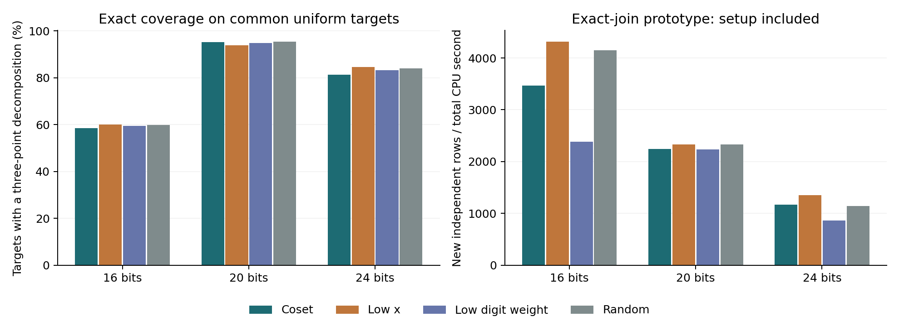
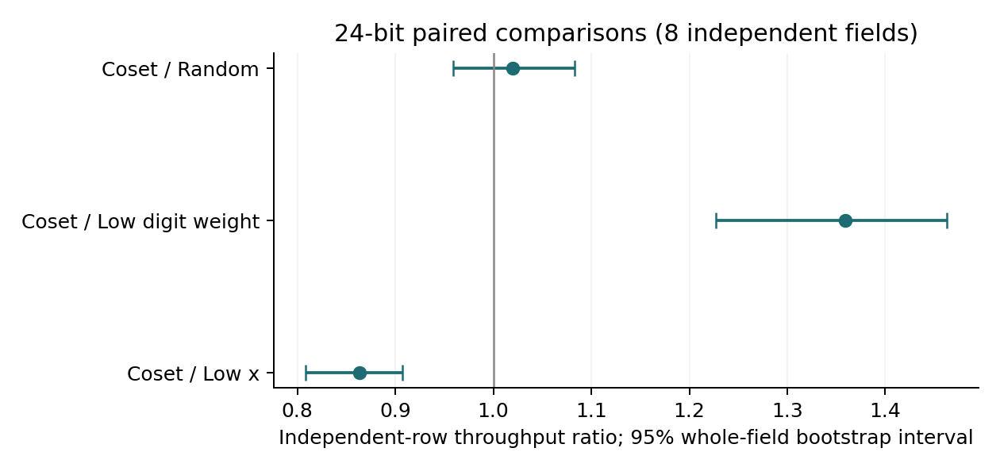

Executed 15 October 2026. A bounded pilot of multiplicative-coset, low-x, low-digit-weight and random point bases.
The 24-bit exact-join comparison does not establish a repeatable coset throughput advantage. Coset/random independent-row throughput: 1.020 (0.959–1.083). Coverage ratio: 0.967 (0.949–0.985). Intervals resample whole fields.
At 16 bits, the fresh algebraic norm solver produced 39 independent rows in 8.436 CPU seconds; the exact join produced 41 rows in 0.026 CPU seconds on the same targets and coset bases. Norm/join throughput ratio: 0.00299 (0.00148–0.00822). Timeouts: 7/96.
At 20 bits, the fresh algebraic norm solver produced 248 independent rows in 53.451 CPU seconds; the exact join produced 253 rows in 0.096 CPU seconds on the same targets and coset bases. Norm/join throughput ratio: 0.00176 (0.00138–0.00226). Timeouts: 9/96.
At 24 bits, the fresh algebraic norm solver produced 90 independent rows in 229.902 CPU seconds; the exact join produced 115 rows in 0.268 CPU seconds on the same targets and coset bases. Norm/join throughput ratio: 0.000914 (0.000485–0.00122). Timeouts: 96/96.
Eight distinct fields at each of 16, 20 and 24 bits, with two independently seeded admitted curves per field: 48 curves total. All use y²=x³−3x+b. Field and full group orders were proved prime; anomalous and supersingular cases, j=0 or 1728, and embedding degree at most 64 were excluded. The target curve is fixed across all four base types within each comparison. Each curve has two predeclared coset/base-order seeds.
The multiplicative subgroup orders are 64, 256 and 512 respectively. The entire coset is retained; only coordinates lifting to actual curve points enter the point base. The other three bases match its actual number m of canonical ± point classes, with both signs available. No production base is generated using known scalar labels.
| Field bits | Independent fields | Subgroup order d | Canonical base m range |
|---|---|---|---|
| 16 | 8 | 64 | 22–39 |
| 20 | 8 | 256 | 112–153 |
| 24 | 8 | 512 | 225–276 |
Each panel uses 64 common uniform finite targets outside the union of all four signed bases. The exact native method stores all signed pair representations with distinct canonical indices, then joins a third point of a different class. It records all decompositions. At most the first eight decompositions of a target supply homogeneous cycles, by subtracting the first from each other one. Rank is over GF(r), with the same m fixed factor-base columns and no target columns.
| 24-bit base | Coverage | Independent rank | Total CPU s | Rank / CPU s |
|---|---|---|---|---|
| Coset | 1663/2048 (81.2%) | 2210 | 1.894 | 1,167.0 |
| Low x | 1732/2048 (84.6%) | 2207 | 1.633 | 1,351.6 |
| Low digit weight | 1703/2048 (83.2%) | 2220 | 2.585 | 858.8 |
| Random | 1719/2048 (83.9%) | 2108 | 1.842 | 1,144.5 |

| 24-bit paired ratio | Estimate (95% interval) |
|---|---|
| Coset / Low x | 0.863 (0.808–0.907) |
| Coset / Low digit weight | 1.359 (1.227–1.463) |
| Coset / Random | 1.020 (0.959–1.083) |

These are descriptive 95% field-cluster bootstrap intervals from 10,000 resamples, preserving curves, seeds and target pairing. The eight independent fields at a size do not support a precise 15% claim. All runs include base construction, pair-table construction, unsuccessful target searches, point verification and incremental rank work. Curve admission and oracle labeling are research work, recorded separately. Timing excludes JSON serialization and the separate independent Sage verification. Sage field contexts are warm within each process.
For the fresh structured-solver comparison, both methods are charged the same previously measured construction time for their identical base; the structured solver also pays its separate polynomial setup and full supervised search cost.
A separate solver uses the coset equation x^d=γ. For a proposed two-point target T=(u,v), write x(T−P)=A(x)+B(x)y, where y²=x³−3x+b. Repeated squaring computes (A+By)^d−γ=D(x)+E(x)y modulo x^d−γ. Taking the quadratic-algebra norm gives D²−(x³−3x+b)E²; a polynomial gcd restricts candidate x-coordinates. Actual point lifting, signs, exceptional denominators and distinct indices are checked exactly. Three-point decomposition enumerates an outer signed point and applies this two-point solver. It uses no point-pair lookup table or oracle answers.
| Bits | Planted found | Known-positive found | Negative completed | Gate |
|---|---|---|---|---|
| 16 | 16/16 | 16/16 | 16/16 | PASS |
| 20 | 16/16 | 15/16 | 16/16 | PASS |
| 24 | 14/16 | 16/16 | 0/16 | PASS |
The gate uses two fields per size, with separate planted, oracle-positive uniform and oracle-negative uniform panels. It requires at least 80% planted success, 70% known-positive success, and zero soundness failures. Per-target worker CPU budget targets are 0.25, 0.75 and 2 seconds. The fresh comparison uses the remaining six fields, one curve/base seed and 16 common uniform targets each. Failures remain in the denominator. A timeout is an unresolved search, not a proof of absence.
Gate positive/negative panels use a separate seeded uniform stream and exact existence labels; the fixed-input rule is recorded in gate_sampling_addendum.json. This ensures eight targets of each label even when a 64-target batch contains too few negatives. Labeling work is separately recorded and never supplied to the structured solver. The addendum preceded the solver gates and inspection of comparison outcomes; solver rules, caps and thresholds did not change.
The initial SIGPROF timing attempt was discarded because Sage could defer the signal inside native routines. Its outputs and consumed CPU are retained under discarded_soft_timer_*; they enter no final comparison. The final run uses a fork worker supervised through external CPU counters, streams verified partial results, reaps each worker and charges both worker and supervisor CPU. Forced termination was checked inside a non-cooperative OpenSSL routine. External CPU monitoring has tick, polling and scheduling delays; every actual overshoot is recorded and charged. 93/93 successful positive gate attempts finished within their target worker CPU budget. Fresh runs are compared using actual CPU, not nominal budgets; the observed overrun maxima are listed below. The timing_wrapper_addendum.json records this correction; fields, targets, solver and thresholds were unchanged.
| Bits | Norm rows / CPU s | Join rows / CPU s | Norm / join ratio |
|---|---|---|---|
| 16 | 39 / 8.436 | 41 / 0.026 | 0.00299 (0.00148–0.00822) |
| 20 | 248 / 53.451 | 253 / 0.096 | 0.00176 (0.00138–0.00226) |
| 24 | 90 / 229.902 | 115 / 0.268 | 0.000914 (0.000485–0.00122) |
Fresh-run worker/supervisor CPU and maximum worker-budget overshoot: 16 bits: 6.395/1.936 seconds, max overshoot 0.359 seconds; 20 bits: 45.935/7.428 seconds, max overshoot 0.267 seconds; 24 bits: 196.227/33.561 seconds, max overshoot 0.507 seconds.
Independent checks: 3024 native point additions/doublings/negations against Sage; 48 admitted-group order identities; 905 complete tiny-field two-point solution sets; 905 complete tiny-field three-point solution sets; 26497 saved independent-row identities; 402 independent Sage matrix ranks. All passed.
The norm routine is a Sage polynomial prototype, while the exact join uses optimized native C point arithmetic. These timings compare the delivered implementations and do not prove an intrinsic complexity separation. The norm method still enumerates an outer point for each three-point target; it does not evaluate every possible solver for low-degree-map bases. Full rank may saturate on tiny curves; checkpoint costs and saturation counts are retained in the CSV. Subgroup order and decomposition intensity change between sizes, so these points do not fit an asymptotic exponent. No point logarithms were recovered, no full index-calculus solve was timed, and these 16–24-bit results do not establish behavior at NIST sizes.
Runtime: SageMath version 10.6, Release Date: 2025-03-31; INTEL(R) XEON(R) PLATINUM 8573C, x86_64; pinned CPU 0, offline container. Frozen protocol SHA-256: 07b1b92a8008d5c71b93d01155622c474372bfdebc79e5889232fa47b301dc12. Exact p,b,r inputs, basis points, targets, decompositions, independent rows, failure records and source are included. See README.txt for commands and results/manifest.json for hashes.
Petit, Kosters and Messeng (PKC 2016), Algebraic approaches for the elliptic curve discrete logarithm problem over prime fields, §§3.3–3.4: https://people.maths.ox.ac.uk/petit/files/16PKC_primeECDLP.pdf
Semaev (2004), Summation polynomials and the discrete logarithm problem in elliptic curves: https://eprint.iacr.org/2004/031. The quadratic-algebra norm implementation in this experiment is an explicit candidate solver; the cited papers do not establish its measured performance.